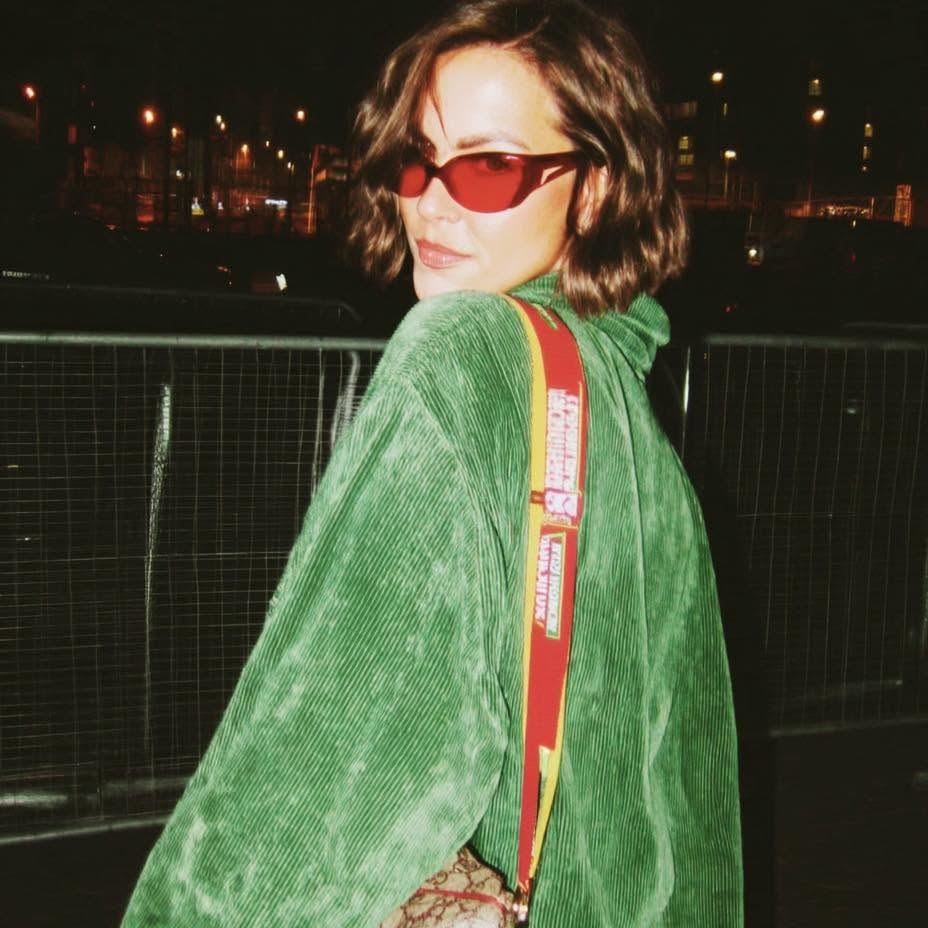
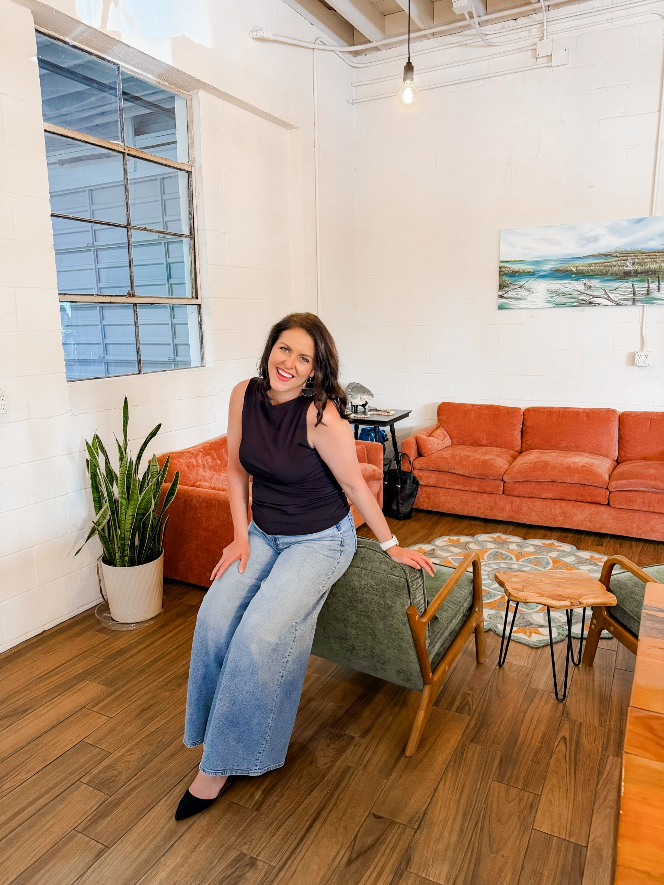

INDEPENDENT JOURNALIST / ALABAMA + THE SOUTH
NEELI
FAULKNER.
I am a reporter covering law, crime, and government accountability across Alabama and the South.
EXPLORE MY WORK
NEELI FAULKNER / 001FEATURED WORK.
SELECTED REPORTING & INVESTIGATIONS
A LITTLE ABOUT ME
BEHIND THE BYLINE.
I'm Neeli Faulkner, an independent investigative journalist, digital researcher, and founder of Murder Creek Media, where I lead a team of more than 25 volunteer researchers and contributors across five states.
My work focuses on criminal justice, cold cases, government accountability, and the systems that shape our communities. I specialize in public records research, open-source intelligence (OSINT), digital investigations, and turning complicated information into stories people can actually understand.
Before journalism, I worked in IT and cybersecurity management. I hold a B.S. in Information Systems and Cybersecurity, graduating summa cum laude. That technical background gives me a different perspective on investigative reporting, particularly when it comes to digital evidence, data analysis, and uncovering information that isn't always easy to find.
My investigative podcast, Skeptical, received a 2025 Gracie Awards Honorable Mention for National Investigative Audio.
Today, my work spans independent investigations, reporting for OpGov, podcast production, and leading collaborative research projects. Whether I'm examining a decades-old murder case or digging through local government records, my approach is the same: follow the evidence, understand the bigger picture, and make the findings accessible.
GET IN TOUCHPUBLICATIONS / PROJECTS
AS SEEN / HEARD ON
HAVE A STORY?
LET'S CONNECT.
Story tips, interview requests, collaborations, or just a hello.
EMAIL ME ↗